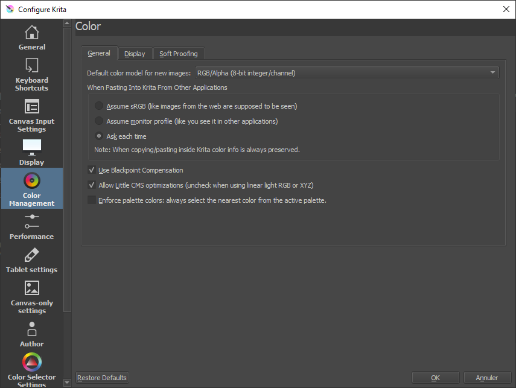

II.N - Color management : Krita¶
Krita is very complete in the management of colors, and uses in particular OCIO*.
Its only drawback is that you can’t specify the color space of the images you import individually. This can be a problem especially when importing openEXR* files which do not come from an application sharing the same OCIO* configuration or if you mix files using different color spaces.
LThe Krita documentation includes interesting and detailed explanations about colors and color management.
N.1 - Workspace¶
The workspace is defined when creating a Krita document.
You can choose the space from the list in the Color tab.
- Model allows you to choose the format in which the colors will be recorded in the document. We generally stay on RGB/Alpha if we work in video, or possibly CMYK/Alpha in case of a document intended for printing.
- Depth defines the depth of the colors. We will generally choose 16-bit float/channel when working for video or animation.
- Profile allows to select the working space, often scRGB (Linear) or ACEScg for video.
The Color Space Browser button opens a more complete dialog box describing the different color spaces available and facilitating the choice.

You can also browse the files to choose a space in ICC format.
It is possible to change the default profile used in new documents via the Krita preferences.

You can also set some other options.
To change the workspace of an already opened document, go to the menu Image then Properties.
It contains the same settings as when the document was created.
N.2 - Display¶
N.2.a - Screen¶
You can specify the display color space for each screen connected to the computer, in the Krita preferences. In general, we leave sRGB except in the case where the screen uses a different space.

N.2.b - Soft-proofing¶
In the third tab of the preferences, it is possible to configure the simulation of the display according to the final output space, which is particularly interesting in Krita when working for printing.

The color selectable in Gamut Warning is the one used to display alerts showing areas of the image outside the output gamut*, and which will therefore be changed during output.
Once the proofing is configured, it can be activated and deactivated for the display of the documents via the menu View (Display) or with the keyboard shortcut [CTRL] + [Y]. Krita can also display an alert for areas of the image whose colors are outside the output gamut, also via the View (Display) menu or with the keyboard shortcut [CTRL] + [SHIFT] + [Y].
You can also define these parameters of proofing only for the opened document, via the menu Image then Properties.

N.3 - Color picker¶
Krita allows you to adjust the display space of the color pickers, which is very practical. You can find the setting in a tab of the preferences.

In general, we check the box allowing to choose a specific space for the color picker (in particular a non-linear space, like the simple sRGB used by the screens).
When working in 16 or 32 bpc floating and a linear space, selector types other than HSV (hue, saturation, value) - i.e. HSL, HSI and HSY - may not work properly (because they must have a maximum white which no longer exists in linear).
N.4 - Output¶
When saving files, Krita displays a dialog box with the appropriate options. When saving in native .kra or openEXR* format, the workspace is used; otherwise Krita will convert to the standard space of the saved file.

Example for a PNG output and its conversion to sRGB, or optionally to Rec.2020.
N.5 - OCIO with Krita¶
Krita uses OCIO which is simply configured via the Docker (panel) called LUT Management.

An example with the OCIO Filmic configuration of Blender